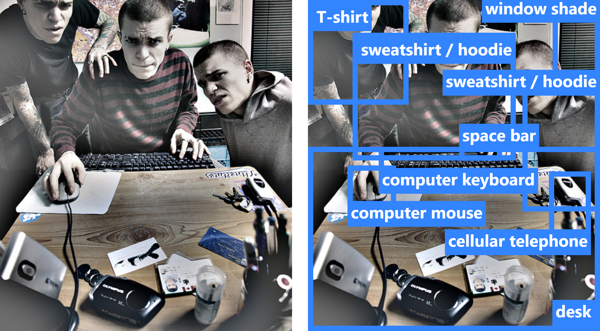
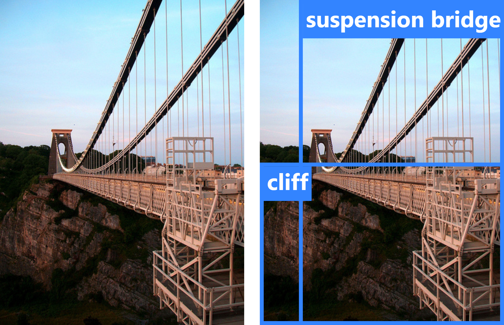
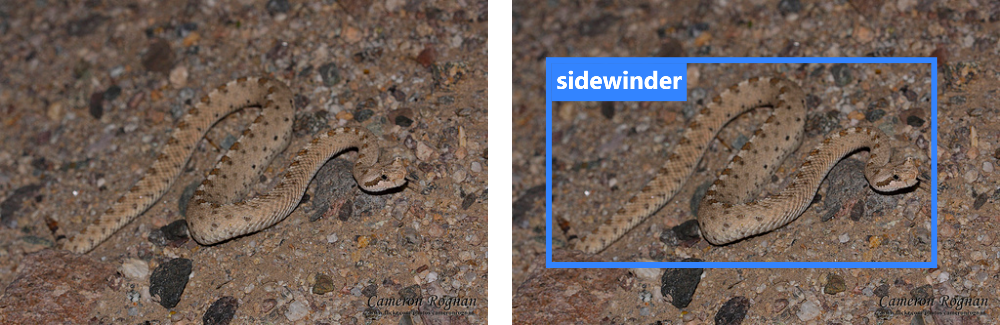
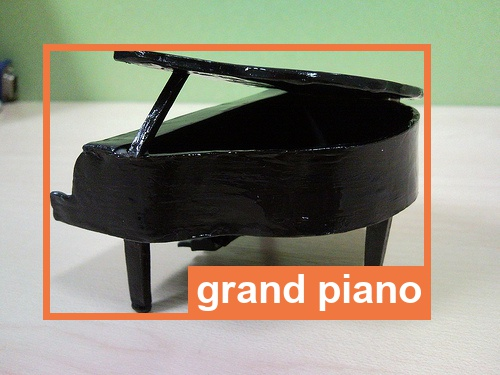
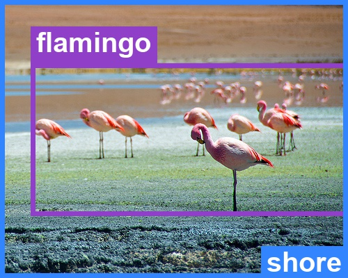
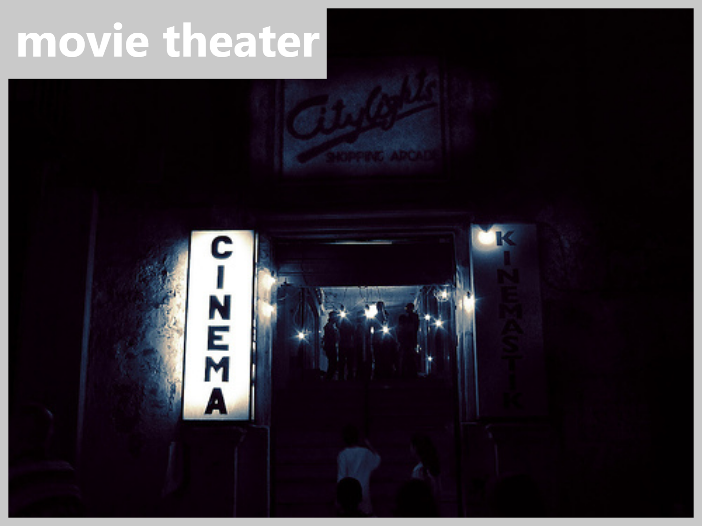
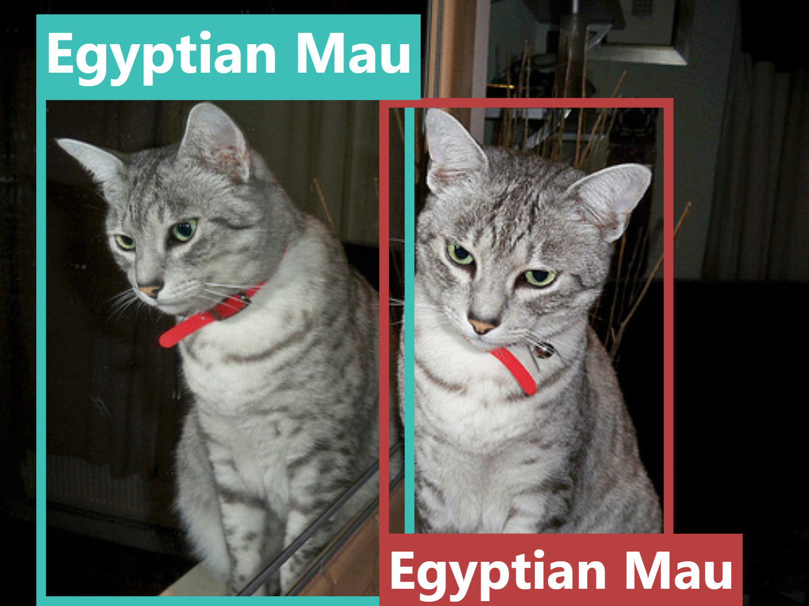
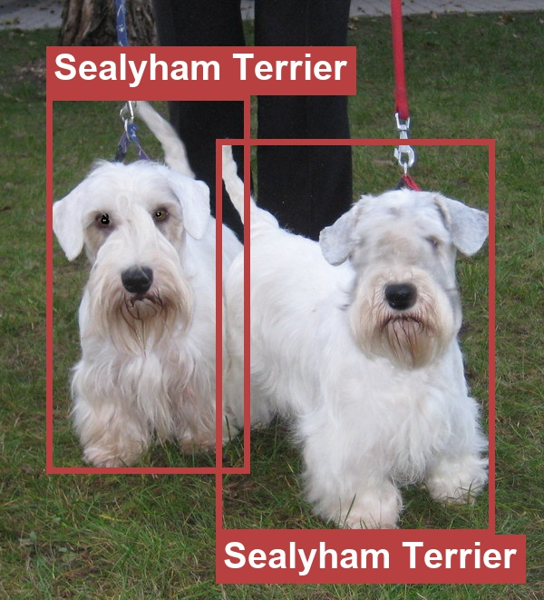

Part of the Aiming for Perfect ImageNet‑1k project
Top-1 accuracy on ImageNet‑1k remains the most commonly reported metric in visual recognition. Quality issues with the dataset have been repeatedly reported, yet the original 2012 noisy labels are still predominantly used. The paper presents a comprehensive effort, which goes well beyond prior correction attempts, towards obtaining accurate and complete ImageNet‑1k validation set annotations. The result, ReImageNet, includes multilabel correction, object localization, revised class definitions, and semantic attributes (text-recognition, rendition, reflection, crowd, dominant). The reannotation reveals that ≈12% of the original ImageNet‑1k labels are incorrect, 33.3% of images are multilabel and 3.8% contain no object from an ImageNet‑1k class. With the new labels, top-1 accuracy increases by up to 1.2% for supervised models and by 5–6% for MLLMs. We argue that annotation at ImageNet scale cannot realistically be completed in one pass, as errors and definitional issues are discovered only through annotating, and we build our pipeline around repeated refinement and error checking. We observed that human and LLM collaboration with appropriate tooling represents the current quality ceiling for annotation at this scale. ImageNet‑1k issues propagate into its derivative test sets, indicating that the problem is structural rather than specific to any single benchmark. All annotations, class definitions, and guidelines have been publicly released; analysis code follows soon.
Real ImageNet‑1k validation images. Each card shows the original ImageNet label and the new ReImageNet annotation.



Bounding box colors encode semantic attributes (see Dataset section). Browse all 50,000 annotations →
From-scratch multilabel reannotation of the full 50k validation set — multilabel corrections, per-instance bounding boxes, revised class definitions, and semantic attributes. Enables classification, detection and robustness evaluation from one release.
Accuracy on corrected labels across supervised models, VLMs, and MLLMs, with per-attribute breakdowns. Crop-based object-centric protocols — tight crops, expanded ExCrops, multi-crop settings.
Quantified label noise in six widely-used ImageNet-derived test sets (ImageNet-V2, -A, -R, -Sketch, ObjectNet, CounterAnimal). Errors amplify at 1.7–5.8× the ImageNet‑1k rate.
Practical guidance on iterative high-quality annotation at scale. Human–LLM collaboration outperforms either in isolation and defines the current quality ceiling for large-scale visual benchmarks.
Every object that belongs to one of the 1,000 classes and stands out immediately when the image is viewed gets a bounding box, a label, and optional semantic attributes. Annotators label what they notice on first viewing rather than every object they could find — the original protocol asked for the latter, but objects spanning a few dozen pixels, recognizable only from context and only after zooming in, made the label set depend on how hard each annotator chose to look. Annotators follow a structured per-class preparation protocol — studying images, revising class definitions, resolving ambiguities — before any image-level labeling begins.
Image partition by label agreement between ReGT and original labels (ImGT). ~12% of images have an incorrect original label (S⁻ + M⁻ + N).
Multilabel rate compared to prior reannotation efforts. ReImageNet's rate is substantially higher, reflecting exhaustive labeling of all immediately visible objects.
All results use ReaL accuracy (Beyer et al., 2020) as the scoring function: a prediction is correct if it matches any ground-truth label for the image. For semantically equivalent ImageNet‑1k class pairs (e.g. the two distinct classes both named laptop computer), either class in the pair is accepted as correct — this is applied to both corrected and original labels to ensure a fair comparison. The 3.8% of images that carry no valid ImageNet‑1k label are left out of the evaluation entirely — no prediction can be right on an image that contains nothing to recognize — leaving 48,114 images in the denominator, for both the corrected and the original labels.
If you've been reporting ImageNet‑1k accuracy for an MLLM, its score is understated. Supervised models gain far less — the gain nearly vanishes for the strongest of them (EVA-02: +0.05%). On the hard subsets S⁻ (single-label images where the original label is wrong) and M⁻ (multilabel images where the original label is absent), MLLMs score 40–46% — ahead of VLMs (35–43%) and supervised models (30–36%). Language-vision training gives MLLMs a clear edge on genuinely ambiguous images that pure supervised models struggle with.
| Model | ImGT Acc. | ReGT Acc. | Δ | Hard images | |
|---|---|---|---|---|---|
| S⁻ | M⁻ | ||||
| MLLMs | |||||
| GPT-5.4 | 72.54% | 77.64% | +5.10% | 46.11% | 40.16% |
| Qwen3-VL | 70.95% | 77.04% | +6.09% | 45.71% | 44.05% |
| Gemma 4 | 69.48% | 74.87% | +5.39% | 45.93% | 42.25% |
| VLMs | |||||
| SigLIP2-g | 86.74% | 88.99% | +2.25% | 42.60% | 35.26% |
| SigLIP2 | 85.82% | 88.43% | +2.61% | 42.96% | 36.63% |
| Supervised | |||||
| EVA-02 | 91.33% | 91.38% | +0.05% | 35.58% | 29.78% |
| EffNet-L2 | 89.82% | 90.52% | +0.70% | 36.30% | 31.87% |
| DINOv3 | 86.49% | 87.69% | +1.20% | 35.87% | 30.06% |
Top-1 accuracy on original labels (ImGT) vs. corrected labels (ReGT), with S⁻ and M⁻ hard-image accuracy.
Five attributes mark objects with specific visual properties, enabling targeted evaluation of model capabilities that standard top-1 accuracy blends into a single number. Two of them shape the evaluation protocol — dominant identifies the object a single-label prediction should match, crowd marks groups of instances covered by one box — while rendition, reflection, and text-recognition isolate specific model capabilities. Click any card for an example image.

The depicted object appears as a toy, drawing, or other stylized representation.

Five or more instances of the same class appear in the image.

Classification of the object requires reading text visible in the image.

The object appears in a mirror or water surface.

Assigned to objects that a person notices immediately upon viewing the image.
Rendition degrades every model, but unevenly: MLLMs cope best (−1.3% to −2.3%) while supervised models fall hardest (EffNetV2: −9.8%, DINOv3: −7.3%) — language supervision generalizes to stylized depictions better than supervised training alone. Text-recognition shows the sharpest split: language-aligned models gain +6–16% by leveraging visible text, while pure supervised models suffer (EffNetV2: −6.7%). Crowd helps most models (up to +3%), with SigLIP2-g the lone small exception. Reflection is positive overall and strongest for VLMs (+1.8% to +3.7%), while GPT-5.4, Gemma 4, and EffNet-L2 dip slightly.
| Model | Rendition | Crowd | Reflection | Text-recog. |
|---|---|---|---|---|
| GPT-5.4 | ↓ −2.3% | ↑ +0.1% | ↓ −2.4% | ↑ +9.5% |
| Qwen3-VL | ↓ −1.3% | ↑ +2.8% | ↑ +1.2% | ↑ +15.6% |
| SigLIP2-g | ↓ −3.8% | ↓ −0.5% | ↑ +3.7% | ↑ +6.4% |
| EVA-02 | ↓ −4.2% | ↑ +2.6% | ↑ +1.5% | ↑ +3.9% |
| EffNetV2 | ↓ −9.8% | ↑ +1.3% | ↑ +2.5% | ↓ −6.7% |
Accuracy change by semantic attribute relative to single-label (S) accuracy baseline.
ReImageNet's bounding boxes unlock object-centric evaluation. We cut a tight crop around each of the 96,051 boxes (avg. 33% of the image area) and evaluate them in four settings. Removing scene context reveals a stark gap: supervised models lose up to 33% accuracy on tight crops, while MLLMs are substantially more robust — reflecting their diverse training data. The gap between Any crop and Largest crop shows that in ~10% of cases a model misses the largest object in an image yet classifies a smaller, less salient one correctly — which questions the standard center-crop evaluation. ExCrops recover ~10% over tight crops while remaining backward-compatible with single-label evaluation.
| Model | Full image | Largest crop | Any crop | All crops | ExCrops |
|---|---|---|---|---|---|
| Gemma 4 | 75.41% | 69.76% (−5.6) | 81.69% (+6.3) | 59.68% (−15.7) | 65.78% (−9.6) |
| SigLIP2-g | 89.00% | 82.21% (−6.8) | 92.96% (+4.0) | 71.41% (−17.6) | 78.87% (−10.1) |
| EVA-02 | 91.43% | 80.64% (−10.8) | 92.16% (+0.7) | 57.95% (−33.5) | 77.81% (−13.6) |
| DINOv3 | 87.75% | 78.46% (−9.3) | 89.75% (+2.0) | 55.44% (−32.3) | 74.41% (−13.3) |
Accuracy under crop-based evaluation. Δ relative to full-image accuracy.
Label noise in ImageNet‑1k propagates directly into derivative test sets, amplified at 1.7–5.8× the original rate. If you evaluate on ImageNet-A or ImageNet-Sketch, 13–15% of the labels you score against are wrong. Any benchmark built on the ImageNet‑1k taxonomy inherits its annotation flaws by construction — the problem is structural, not specific to any single benchmark.
| Benchmark | # Images | IN-1k error rate | Benchmark error rate | Est. mislabeled |
|---|---|---|---|---|
| ImageNet-V2 | 10,000 | 4.74% | 11.15% | ~436 |
| ImageNet-A | 7,500 | 2.57% | 14.80% | ~433 |
| ImageNet-R | 30,000 | 2.97% | 4.99% | ~456 |
| ImageNet-Sketch | 50,889 | 4.74% | 13.38% | ~2,861 |
| ObjectNet | 18,574 | 5.30% | 8.96% | ~436 |
| CounterAnimal | 13,334 | 1.95% | 4.76% | ~293 |
Estimated annotation error rates in ImageNet-derived benchmarks.
ReImageNet was produced by 7 trained in-house annotators following a structured per-class preparation protocol, supported by detector and MLLM predictions as optional reference. Continuous communication uncovered edge cases throughout, requiring repeated mid-annotation revisions of guidelines, class definitions, and attributes. A case study found that when GPT-4o disagreed with trained annotators, the annotators were wrong approximately 50% of the time — confirming that MLLMs and humans are complementary, and that reliable annotation at this scale is inherently iterative.
Because a single pass cannot catch everything, the current release is accompanied by an active second verification phase: annotators revisit already-annotated images against the now-finalised guidelines, with anonymized MLLM+SAM predictions, first-pass annotations, and original ImageNet labels as optional reference. Only minor refinements are expected and the published results are representative of the final dataset.
We do not claim the annotations are error-free. Residual inter-annotator variance remains: which objects count as immediately visible, where exactly to draw a bounding box, and which instances carry the dominant attribute all involve judgment calls.
If you use this work, please cite:
@article{volkov2026imagenet,
author = {Volkov, Illia and Kisel, Nikita
and Mishkina, Tetiana and Janouskova, Klara
and Matas, Jiri},
journal = {arXiv preprint},
title = {Doomed to Re-Annotate, Forever: The ImageNet Story},
year = {2026},
url = {https://arxiv.org/abs/2608.13783}
}